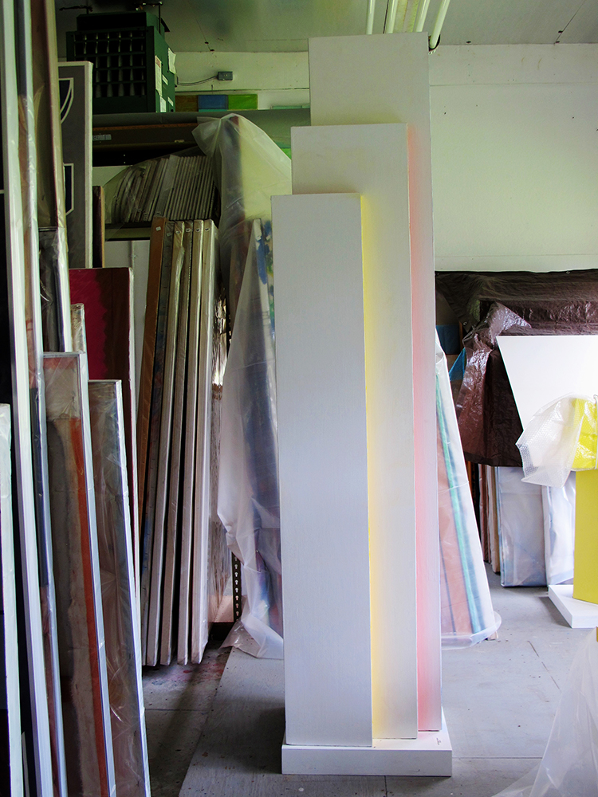

COLOR.
In a section of the city dominated by browns, blacks, and greys, the reds, blues, greens and yellow of Color Cubes surprised, seized, and delighted the eye, even after decades of wear and fading.

Perhaps nothing is more essential to Color Cubes, and to Rubello's art in general, than pure color (though he has made compelling work in black and white). There is a sense of joy and discovery in the boldness and confidence with which he wields and juxtaposes like colors, different colors, and shades of the same color. This is the joy of a passionate educator: Rubello taught color at the College for Creative Studies in the late 1990s, and it would not be incorrect to say that his work teaches its viewers about color.
The artist Josef Albers , whose work is a parent to Rubello's, writes in 1971 that color, "the most relative medium in art, has innumerable faces or appearances. To study them in their respective interactions, in their interdependence, will enrich our 'seeing,' our world -- and ourselves."1
Rubello's later forays into three-dimensional painting and sculpture lead to him a new way of thinking about and working with color: by placing a colored surface very near and at a right angle to a white surface, a subtle, colored shadow is cast upon the latter.
"It glows," Rubello says about this device, which he refers to as "reflected color."
"But I call it a fugitive thing because you either see it or you don't. It all has to do with the painting's relationship to light."
Here is Rubello reading his 2004 poem "That Damn Kurt Schwitters," which was inspired by the eccentric German collage artist Kurt Schwitters , who used scraps of colored paper in his art:
See COLOR CUBES , RICHARD MORTENSEN , and PERSPECTIVE .